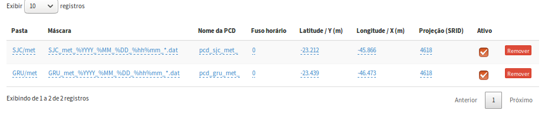
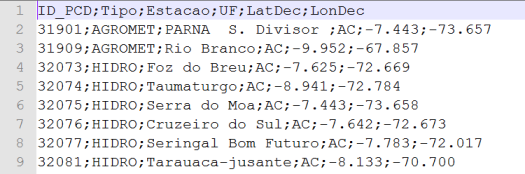

Dado de PCD
SÉRIE DE DADOS DO TIPO PCD 
Os dados dinâmicos do tipo PCD (Plataforma de Coleta de Dados) podem ser oriundos de diversas fontes como apresentado no item Dados e Formatos. Para facilitar o seu uso foi incluído a leitura desses dados nos seguintes formatos:
- PCD – INPE : arquivos ASCII com uma sintaxe específica serão lidos de um servidor remoto e somente última leitura do equipamento será transferida para um sistema gerenciador de banco de dados PostgreSQL + PostGIS. Os dados das PCD´s do INPE são armazenados sempre no mesmo arquivo.
- PCD – TOA5 : arquivos ASCII com uma sintaxe específica serão transferidos de um servidor remoto para um sistema gerenciador de banco de dados PostgreSQL + PostGIS.
- PCD – CSV customizável : arquivos ASCII com uma sintaxe configurável serão transferidos de um servidor remoto para um sistema gerenciador de banco de dados PostgreSQL + PostGIS.
- PCD – PostGIS : esta opção requer que os dados estejam em tabelas de um sistema gerenciador de banco de dados PostgreSQL + PostGIS. A plataforma pode fazer uso do dado disponível (tabela) no servidor de banco de dados, neste caso, os parâmetros na aba “Armazenar” não devem ser preenchidos. Caso queira transferir os dados das tabelas de PCD entre servidores preencha os parâmetros na aba “Armazenar”.
- ADICIONANDO DADO DINÂMICO - PCD:
Para adicionar um novo dado dinâmico do tipo PCD é necessário ter um projeto ativo. No menu de opções selecione “Dados Dinâmicos” para que a lista de dados disponíveis seja apresentada na área de trabalho. Clique no botão “ + ” para adicionar novo dado. Utilize o botão “Salvar” para salvar o dado dinâmico. Não é permitido nomes de dados em duplicidade. Botão “Cancelar” volta à tela anterior sem salvar o dado. Detalhes de cada campo a seguir.
Registro de Dado Dinâmico - Geral:
- Formato: Escolha o tipo entre “PCD - INPE, PCD - TOA5, PCD - PostGIS ou PCD - CSV customizável”, para formatos do tipo PCD. Dependendo do tipo escolhido alguns parâmetros específicos serão apresentados para preenchimento. IMPORTANTE: Uma vez escolhido não pode ser alterado, a menos que saia da edição e retorne.
- Nome: Defina o nome do dado dinâmico (campo obrigatório para passar para os demais itens). O tamanho máximo do nome é de 100 caracteres. Não é permitido nomes duplicados.
- Descrição: Campo não obrigatório para descrição do dado dinâmico. O tamanho máximo da senha é de 250 caracteres.
- Servidor de Dados: Escolha o servidor de onde será coletado os dados por servidores remotos do tipo FTP ou HTTP/HTTPS, ou para dados disponíveis em servidores de arquivos locais - ARQUIVO, ou ainda para tabelas em bancos de dados PostGIS.
- Ativo: Botão ativo permite coletar o dado dinâmico em questão e que está associado ao servidor escolhido acima. Botão desmarcado nenhuma coleta será realizada.
Registro de Dado Dinâmico - Parâmetros:
Utilize os parâmetros dessa aba para informar a lista de PCD´s que farão parte série de dados dinâmicos. A lista de PCD´s pode ser inserida manualmente uma a uma ou através de um arquivo CSV que tenha esta lista.
Edição manual de PCD
Para incluir uma PCD na lista de PCD´s preencha todos os campos abaixo antes de clicar em “Adicionar”. Os campos a preencher são:
- Pasta: Caminho (diretório) onde os arquivos de dados deverão ser procurados. A pasta (ou sub-pastas) informada será adicionada ao caminho informado pelo servidor.
- Máscara: Máscara do nome dos arquivos a serem coletados. Esta máscara utiliza partes constantes para capturar prefixos utilizados nos nomes dos arquivos e sequências especiais para indicar ao sistema como interpretar informações de data e hora contidas nos nomes dos arquivos. Utilizar %YYYY para anos de 4 dígitos, %YY para anos de 2 dígitos, %MM para mês, %DD para dia, %hh para hora,%mm para minutos e %ss para segundos. Caracteres que não mudam podem ser mantidos ou substituídos por * (asterisco).
- Nome da tabela (somente para formato “PCD – PostGIS”): Digite o nome da tabela disponível no servidor PostGIS correspondente a cada PCD a ser incluída na lista.
- Nome da PCD (somente para formato “PCD – PostGIS”): Digite o apelido da tabela correspondente a PCD a ser incluída na lista.
NOTA: Os arquivos de PCD´s no formato do INPE devem ser sempre os mesmos nomes. Estes são alimentados automaticamente pelo sistema de coleta e uma linha é inserida no final de cada arquivo a cada aquisição realizada pelo SINDA em Natal-RN.
- Fuso Horário: Fuso horário do local onde o dado dinâmico foi gerado. Esse parâmetro garante que as datas e horas dos dados coletados se mantenham consistentes com a base de dados. Dados em horário GMT devem utilizar o valor 0.
- Latitude / Y (m): Valor da latitude da PCD em graus decimais ou metros no sistema de projeção.
- Longitude / X (m): Valor da longitude da PCD em graus decimais ou metros no sistema de projeção.
- Projeção (SRID): Valor numérico dos parâmetros de projeção e datum dos dados a serem coletados. Cada PCD pode ter seu valor de projeção.
- Ativo: Marque para coletar dados da PCD ou desmarque para não coletar dados.
- “Adicionar”: Use o botão para incluir os dados da PCD na lista abaixo.
Após a inclusão de uma PCD na lista, qualquer dos itens acima podem ser editados, basta clicar sobre o item na lista para abrir a edição. Use o botão ✍ para confirmar alteração ou botão ✍ para cancelar edição. Utilize ainda os botões ☑ para ativar ou não a coleta de dado de uma PCD específica e o botão “Remover” para excluir uma PCD da lista (Figura 2.16).

Figura 2.16 – Módulo de Administração: Adição de dado dinâmico – Lista de PCD
Importar arquivo CSV de PCD's
Para incluir uma lista de PCD's a partir de um arquivo CSV (Comma-Separated Values). Importante que o arquivo tenha no mínimo as informações de identificação das PCD´s, latitude (ou coordenada Y em metros) e longitude (ou coordenada X em metros). Outras informações que não estiverem no arquivo CSV poderão ser fornecidas no momento de importar o arquivo, porém serão consideradas constantes para todas as PCD do arquivo. Note que o arquivo CSV pode ter ou não a primeira linha que identifica o nome das colunas. Caso não tenho a primeira linha de cabeçalho, as colunas receberão números para sua identificação. A Figura 2.17 mostra parte de um arquivo CSV com a primeira linha de cabeçalho.

Figura 2.17 – Módulo de Administração: Adição de dado dinâmico – Arquivo CSV de PCD´s
Na aba Parâmetros clique em “Importar CSV” e responda aos campos apresentados na janela aberta “Selecione o caractere delimitador do arquivo CSV e se o arquivo tem um cabeçalho”.
- Caractere delimitador: Escolha entre “Ponto e Vírgula (;)” ou “Vírgula (,)”.
- A primeira linha é um cabeçalho: Marque este botão se a primeira linha identifica nome das colunas do arquivo.
- “Importar”: Clique nesse botão para escolher onde se encontra o arquivo CSV.
A janela de sistema de arquivos será apresentada. Note que a extensão padrão é (*.csv), mas caso seu arquivo tenha outra extensão mude para (Todos Arquivos). Ao abrir o arquivo CSV uma lista de campos deverão ser selecionados ou preenchidos.
- Pasta: Caso as PCD’s estejam em pastas diferentes no servidor de origem utilize o botão para escolher uma coluna que contenha o nome das pastas. A opção “Entre com um valor padrão” permite que seja informado o nome de uma pasta padrão para todas as PCD´s, neste caso, preencha o campo a seguir. Há ainda a opção “Deixar o campo vazio” que neste caso será considerado o caminho base informado pelo Servidor de Dados.
- Default: Digite o nome da pasta padrão onde todas as PCD´s deverão ser encontradas pelo serviço de coleta.
- Máscara: Selecione o atributo que identifica unicamente cada PCD. Este atributo pode ter uma máscara no nome dos arquivos que identifica a data e hora em que cada arquivo é criado. Utilize %YYYY para anos de 4 dígitos, %YY para anos de 2 dígitos, %MM para mês, %DD para dia, %hh para hora,%mm para minutos e %ss para segundos. Caracteres que não mudam podem ser mantidos ou substituídos por * (asterisco). Caso necessite incluir um sufixo (como uma extensão) ao nome dos arquivos utilize o campo a seguir.
- Sufixo: Digite um sufixo a ser incluído ao atributo escolhido acima.
- Nome da PCD: Indique o nome de uma coluna que será utilizado para nome das tabelas que serão criadas para cada PCD. No caso desses nomes iniciem por números, um prefixo (campo a seguir) terá de ser incluído ao nomes das tabelas, pois alguns sistemas de banco de dados não permitem que tabelas iniciem seus nomes por números.
- Prefixo: Digite um prefixo a ser incluído ao atributo escolhido acima para compor o nome da tabela a ser criada.
- Fuso Horário: Indique o nome de uma coluna que informa o valor de fuso horário que cada PCD poderá utilizar. Normalmente as PCD´s de uma série de dados dinâmicos são configuradas todas no mesmo valor de fuso e no padrão GMT internacional. Neste caso, utilize a opção “Entre com valor padrão” para habilitar o botão “Default” e assim escolher o valor abaixo.
- Default: Fuso horário do local onde o dado dinâmico foi gerado. Esse parâmetro garante que as datas e horas dos dados coletados se mantenham consistentes com a base de dados. Dados em horário GMT devem utilizar o valor 0.
- Latitude / Y (m): Indique o nome de uma coluna que informa o valor de latitude (em graus decimais) ou coordenada Y em metros de cada PCD.
- Longitude / X (m): Indique o nome de uma coluna que informa o valor de longitude (em graus decimais) ou coordenada X em metros de cada PCD.
- Projeção (SRID): Indique o nome de uma coluna que informa o valor de projeção / datum que cada PCD possui. Normalmente as PCD´s de uma série de dados dinâmicos são configuradas todas no mesmo valor de projeção. Neste caso, utilize a opção “Entre com valor padrão” para habilitar o campo “Default” e assim digitar o valor abaixo.
- Default: Fuso horário do local onde o dado dinâmico foi gerado. Esse parâmetro garante que as datas e horas dos dados coletados se mantenham consistentes com a base de dados. Dados em horário GMT devem utilizar o valor 0.
- “Importar”: Clique no botão para incluir a lista das PCD´s contida no arquivo CSV.
NOTA: Caso exista alguma PCD previamente disponível na lista corrente a importação adicionará mais itens a lista atual. Caso existam nomes de PCD em duplicata será incluído um caractere numérico da seguinte forma “_1” no nome da PCD adicionada.
Após a inclusão das PCD´s na lista, qualquer dos itens acima podem ser editados. Clique sobre o item na lista para abrir a edição. Use o botão V para confirmar alteração ou botão X para cancelar edição. Utilize ainda os botões V para ativar ou não a coleta de dado de uma PCD específica e o botão “Remover” para excluir uma PCD da lista (Figura 2.16 acima).
Registro de Dado Dinâmico – Formato CSV:
Esta aba somente será apresentada quando o formato do dado dinâmico escolhido na aba Geral for a opção “PCD – CSV customizável”. Esta opção permite que seja configurado a leitura de arquivos CSV com diferentes configurações internas, portanto, antes de iniciar esta aba tenha em mãos uma cópia de um arquivo que será lido. Basicamente é solicitado quantas linhas de cabeçalho e qual delas identifica os atributos, se a maioria dos atributos foram de um tipo (inteiro, real ou texto) poderá converter todos de uma única vez e aqueles atributos diferentes de todos devem ser configurados numa lista. Veja a seguir a manipulação dos campos dessa aba.
- Número de Linhas do cabeçalho: Digite o número de linhas que o arquivo CSV tem.
- Linha com nome dos atributos: Digite o número de linhas que contém o cabeçalho.
- Converter todos: Utilize esta opção para converter todos atributos para um tipo padrão. Aqueles campos que forem diferentes do tipo padrão deverão ser incluídos na “Lista de Atributo a diferenciar”. Caso não marque esta opção, somente os atributos fornecidos pela lista serão lidos e inseridos no bando.
- Tipo padrão: Escolha uma das opções entre “Float” para números reais, “Integer” para inteiro ou “Texto” para conjunto de caracteres.
- Lista de Atributo a diferenciar: Uma lista deverá ser criada exclusivamente para aqueles atributos que representam campos de data/hora ou que tenham tipos diferentes do tipo padrão escolhido acima. Utilize o botão “Adicionar” para incluir um item na lista. Utilize o botão “Remover” em um item da lista para removê-lo.
- Tipo: Escolha uma das opções entre “Float” para números reais, “Integer” para inteiro, “Texto” para conjunto de caracteres ou “Data” para o campo com a data e hora em que foi realizada a coleta da PCD. É obrigatório a inclusão nessa lista de um campo do tipo “Data”.
- Nome do atributo: Informe o nome do atributo que será lido.
- Formato (somente para tipo “Data”): Informe a máscara da data/hora a ser lida.
- Pseudônimo: Informe o nome do atributo a ser criado nas tabelas de cada PCD.
- “Adicionar”: Clique para incluir o item na lista.
Registro de Dado Dinâmico – Armazenar ⊕:
Utilize os parâmetros dessa aba quando necessário armazenar os dados coletados de servidores remotos ou quando deseja-se converter para um formato diferente em servidor local.
- Formato de saída: Escolha o formato de saída. Para dados dinâmicos de PCD escolha “PCD PostGIS”.
- Armazenar Dados: Servidor de dados que irá armazenar dados coletados. Para dados dinâmicos de PCD somente servidores PostGIS estarão disponíveis.
- Serviço: Escolha o serviço de coleta a ser utilizado.
- Lista de PCD´s : Confira a lista de PCD´s que serão criadas. Uma tabela para cada PCD será adicionada ao servidor de banco de dados escolhido. O nome da tabela associada a cada PCD ainda pode ser alterado se desejar.
- Armazenar ⊕ - Programação: Nesta sessão o usuário deve definir quando será executada a coleta e o armazenamento se houver.
- Tipo: Escolha tipo “Manual” ou “Programação”. Se opção “Manual” a coleta e armazenamento só será realizada se o usuário utilizar o botão “Salvar e executar” ou ainda na lista de dados dinâmicos o botão “Executar” do item desejado. Se opção “Programação” preencha os campos abaixo.
- Unidade de tempo: Escolha um item entre “Segundos, Minutos, Horas e Semanalmente”.
- Frequência (somente se Unidade de tempo for Segundos, Minutos, Horas): Digite um valor de um número inteiro.
- Tempo Inicial
 (somente se Unidade de tempo for Segundos, Minutos, Horas): Clique no campo para escolher o valor de hora, minuto e segundo que será utilizado como referência para executada a coleta e armazenamento do dado dinâmico.
(somente se Unidade de tempo for Segundos, Minutos, Horas): Clique no campo para escolher o valor de hora, minuto e segundo que será utilizado como referência para executada a coleta e armazenamento do dado dinâmico. - Programação (somente se Unidade de tempo for Semanalmente): escolha uma das opções entre “Domingo, Segunda-feira, Terça-feira, Quarta-feira, Quinta-Feira, Sexta-feira e Sábado”
- Hora (somente se Unidade de tempo for Semanalmente): clique no campo para escolher o valor de hora, minuto e segundo que será executada a coleta e armazenamento do dado dinâmico.
Registro de Dado Dinâmico – Filtrar ⊕:
Utilize os parâmetros dessa aba para limitar o período (início e fim) da coleta de um dado em servidor ou executar um recorte na área do dado e ser coletado.
- Filtrar ⊕ - Data: Nessa seção o usuário pode definir uma data/hora inicial e final para coletar dados.
- Ignorar dados anteriores a : Clique no campo para escolher a data e hora que será utilizado como referência para não coletar dados dinâmicos anteriores a escolha.
- Ignorar dados após : Clique no campo para escolher a data e hora que será utilizado como referência para não coletar dados dinâmicos posterior a escolha.
DICA: O servidor de dados pode ter um volume grande de dados históricos disponível na pasta onde será coletado os dados, portanto, se for definir um novo dado dinâmico que interessa somente a partir da data/hora atual, utilize somente o filtro para “Ignorar dados anteriores a”.
- Filtrar ⊕ - Área: Nessa sessão o usuário deve definir um recorte espacial nos dados dinâmicos de PCD para armazenar somente as leituras que estiverem dentro de uma área de interesse.
- Selecionar o tipo de filtro por área: Por padrão a opção “Não filtrar” não aplica nenhum recorte aos dados. Escolha “Filtrar por limites” ou “Filtrar por dado estático”. Para “Filtrar por limites” defina as coordenadas de dois pontos, sendo o primeiro (mín) inferior esquerdo e o segundo (max) superior direito. Para “Filtrar por dado estático” cadastre previamente um dado estático vetorial com um ou mais polígonos que serão utilizados para recortar a(s) área(s) de interesse.
- X min (somente para Filtrar por limites): Digite o valor mais a esquerda da área a recortar. Valor depende do sistema de projeção utilizado.
- Y min (somente para Filtrar por limites): Digite o valor mais abaixo da área a recortar. Valor depende do sistema de projeção utilizado.
- X max (somente para Filtrar por limites): Digite o valor mais à direita da área a recortar. Valor depende do sistema de projeção utilizado.
- Y max (somente para Filtrar por limites): Digite o valor ponto mais acima da área a recortar. Valor depende do sistema de projeção utilizado.
- Projeção SRID (somente para Filtrar por limites): Valor numérico dos parâmetros de projeção e datum a ser utilizado pelo par de coordenadas acima.
Exemplo: Para sistemas de coordenadas geográficas utilize o valores em graus decimais (-23.43, –45.22) para longitude e latitude, e para sistema de coordenadas projetados utilize os valores em metros (345455.32, 7455432.43).
- Séries de Dados (somente para Filtrar por dado estático): Escolha o mapa que contém um dado estático vetorial de polígonos que deverão incluir as PCD´s.
Registro de Dado Dinâmico – Interseção ⊕:
Além dos atributos que normalmente serão coletados de cada série de dados dinâmicos de PCD´s, durante a coleta é possível adicionar novos atributos a cada PCD resultante da interseção espacial do ponto de localização da PCD com um dado dinâmico matricial, seja um dado de observação ou previsão numérica. Neste caso, o valor do pixel da grade será incluído como mais um atributo da coleta.
- + : Clique no botão para adicionar um plano de interseção. Uma janela será apresentada para escolher qual dado dinâmico será utilizado.
- Dado Dinâmico: Clique para abrir a lista de dados dinâmicos a escolher. Note que uma vez escolhido o mesmo será retirado dessa lista. A lista de dados escolhidos fica disponível na área de trabalho.
- Camadas: Clique no botão para informar quais camadas serão utilizadas para recuperar o valor do “pixel”. (EM DESENVOLVIMENTO)
Created with the Personal Edition of HelpNDoc: Single source CHM, PDF, DOC and HTML Help creation